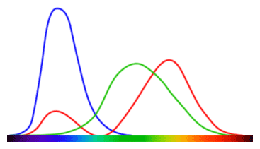

Color is wild!
You, a baby: just a bit of red, a bit of green and a bit of blue, stand back! I've got this!
Me, an intellectual: hold on a moment kiddo. There's a lot more to it. Perception is not uniform in that color space you're navigating. And different cultures perceive colors differently, our brain-maps are grown individually, in a context of their own, and it all makes a heck of a difference. Color is out of this world! Even if our brains were all aligned, the retina does a lot of work, with color cones of three different kinds, and sometimes less and sometimes more...
And if you understood a single color (which I doubt you ever can)... these things are deployed in sets, called "palettes" and the way the palettes are combined, the theories thereof, can themselves fill if not a book certainly a pamphlett.

↑ "A MacAdam diagram in the CIE 1931 color space. The ellipses are shown ten times their actual size."